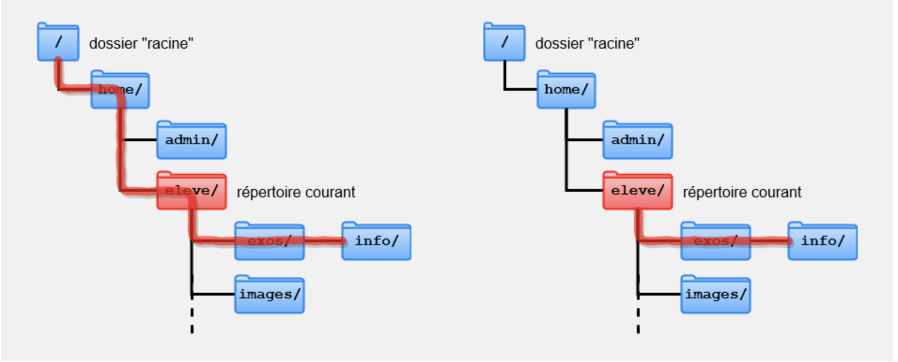
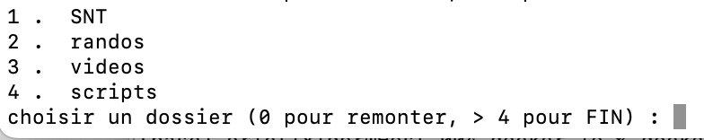
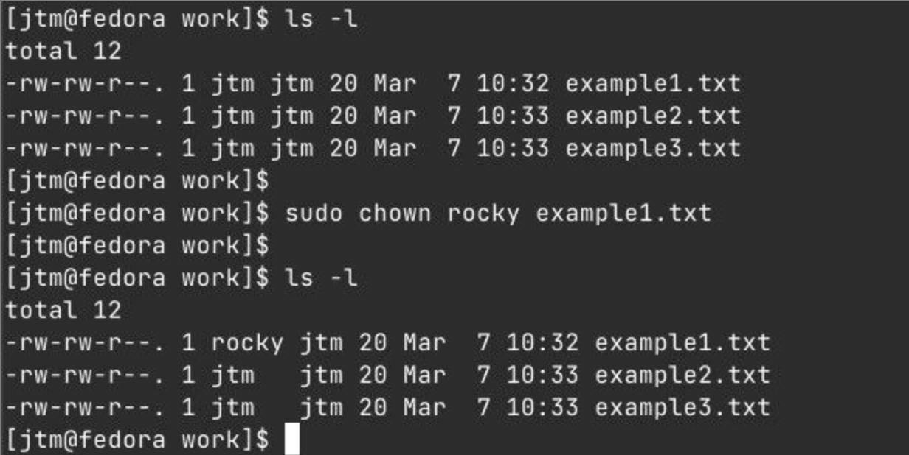

explorateur en ligne de commande
Utiliser une console python
Dans votre IDE python, ouvrir un nouveau fichier. Placer l’instruction:
Sauvegarder ce fichier dans votre repertoire de travail. Executer celui-ci. Pour l’IDE, le repertoire courant est alors celui où se trouve votre fichier.
Les fonctions python qui permettent de naviguer entre dossiers et fichiers font partie du module os.path, dont la documentation officielle est ici: doc python
On utilisera principalement:
os.getcwd(): str, le dossier courantos.path.abspath(d): retourne le chemin absolu du dossier dos.chdir(d): change de dossier pour aller au dossier dos.chdir('..'): remonte d’un niveauos.listdir()ouos.listdir(d): retourne la liste des fichiers et dossiers du dossier courant ou bien du dossier dos.path.isdir(f): booléen True sifest un dossieros.path.isfile(f): True si f est un fichierf.endswith('.csv'): True si l’extension de f est .csv
Chemins

Absolu: '/home/eleve/exos/info/' Relatif: 'exos/info/'
Un chemin est une chaîne de caractères permettant de désigner un Dossier ou un Fichier.
Un chemin peut être absolu ou relatif:
- Absolu ( = relatif au dossier racine )
- Relatif (au répertoire courant)
Sous Windows le séparateur est le caractère \ alors que sous Linux, il s’agit du caractère /.
En Python les deux notations sont possibles, mais étant donné la signification particulière du caractère \, il faudra en écrire deux : \\ (ce qui correspond en fait à un seul \ dans la chaîne):
Linux:
Windows:
Lister et afficher le contenu du dossier courant
Exemple 1: chemin du repertoire courant avec os.getcwd()
Dans cet exemple:
- le repertoire courant est
donnees-astep2025 - le chemin est donné à l’aide d’une chaine de caractères, entre guillemets
On peut placer ce chemin dans une variable.
Exemple 2: chemin absolu du repertoire d avec os.path.abspath(d)
Naviguer dans les dossiers
Télécharger le dossier home, décompressez le dans votre dossier courant.
Depuis votre console python, ouverte dans le repertoire racine, qui doit contenir le dossier decompressé home, utiliser les instructions suivantes pour explorer les dossiers et fichiers home: (les noms des dossiers ci-dessous sont des exemples, et peuvent varier selon votre machine)
Poursuivez alors votre exploration jusqu’à trouver le repertoire contenant le fichier
fibo.py
- importer la fonction python de ce fichier:
>>> from fibo import fibonacci- utiliser cette fonction depuis votre console python:
>>> fibonacci(30)- revenir ensuite au repertoire racine, celui contenant
['home']: il faudra utiliser plusieurs fois la commande:>>> os.chdir('..')
Programmer un explorateur avec une interface utilisateur
L’interface sera en console (textuelle)
On pourra s’inspirer de la sequence d’instruction suivante:
On souhaite afficher le contenu du repertoire courant de la manière suivante:
Si c’est un repertoire contenant d’autres repertoires, afficher ceux-ci, avec un numero croissant commençant à 1

Si c’est un repertoire de fichiers, afficher les fichiers avec un numero croissant, commençant par 1
Demander alors à l’utilisateur s’il veut poursuivre son exploration (dossier de repertoires), ou s’il veut traiter l’un des fichiers. Il devra repondre:
0pour remonter d’un niveau (mais pas plus haut que le repertoire racine)1pour aller dans le dossier1, ou bien1pour traiter le fichier12s’il y a un dossier/fichier2- etc…
- autre s’il veut arrêter le programme (-1 par exemple)
Conseils:
- Conserver un script le plus lisible possible: utiliser des fonctions pour
lister_le_contenuouchanger_de_dossier.- Utiliser un mécanisme
try ... exceptpour eviter les saisies non conforme par l’utilisateur (input)
Votre programme fonctionne? Aller alors à l’étape 1 du projet de recherche d’exoplanètes.
Programmer une fonction recursive de recherche d’un fichier
Les instructions de recherche dans un sous-dossier sont identiques à celles de recherche dans un dossier. On doit pouvoir écrire le script sous forme recursive. Le debut pourrait être comme ceci:
Ainsi, pour chaque élément d du dossier courant:
- si celui-ci est un repertoire:
- afficher que l’on va chercher le fichier
fdans le sous dossier de chemincourant+'/'+d - appel recursif pour rechercher le fichier
fdans le dossiercourant+'/'+d
- afficher que l’on va chercher le fichier
A vous de jouer:
- Programmer cette fonction recursive.
- utiliser cette fonction pour trouver le chemin vers le fichier
fibo.py
Utiliser la console Linux
Les bases du langage en console LINUX
Les commandes d’exploration
PWD: nom du repertoire courantcd ..: remonter au repertoire parentls: lister le contenu du repertoire courant. Nombreuses options possibles commel(affiche le contenu et les droits),-r(parcours et affichage recursif), …
La commande cat
Cette commande permet à la fois:
- de consulter le contenu d’un fichier:
cat nom_du_fichier - de créer et editer le contenu d’un fichier:
cat > nom_du_fichier. Le curseur (carré) permet d’editer le contenu. Pour sortir de l’editeur, faire CTRL + D.
afficher un contenu trop long
Si vous utilisez ls -R, qui affiche de manière recursive le contenu de tous les repertoires et fichiers à partir du repertoire courant, l’affichage est trop rapide pour en voir le detail.
On peut alors utiliser l’option | more, qui attend un appui sur le clavier pour passer à la suite de l’affichage: ls -R | more.
Une autre possibilité est de rediriger le contenu dans un fichier, nouveau ou existant: ls -R > fichier1.txt
Le symbole > va mettre le contenu dans le fichier, alors que >> va ajouter le contenu au fichier.
La commande ps ou ‘ps -l’
Pour la liste des processus obtenue par ps
- PID : numéro du processus (processus identifier)
- PPID : identifiant du parent qui a engendré le processus
- PRI : numero pour indiquer la priorité
- TTY : le terminal utilisé
- TIME : temps d’occupation du processeur
- CMD : commande qui a lancé le processus
- STAT : statut
Les status possibles
- R (Running et Runnable) : en cours d’exécution. Nous verrons que cela correspond aux états PRET (Runnable) ou ELU (Running) de la partie 2.
- S (Sleeping) : endormi. Cela correspond à l’état BLOQUE de la partie 2.
- D (Device) : en attente d’une ressource (généralement d’entrée/sortie) (le processus ne peut pas être interrompu). Cela correspond à l’état BLOQUE de la partie 2.
Les trois états terminaux FINI :
-
T (sTopped) : terminé et va transmettre sa réponse à son parent. On libère une partie de la mémoire mais on garde encore des informations sur son état final.
-
Z (Zombie) : processus terminé ayant répondu mais dont le parent n’a pas encore eu le temps de totalement finir la destruction.
-
X (Dead) : processus terminé et détruit (vous ne devriez jamais voir de X dans votre liste). On peut trouver une deuxième lettre derrière l’état : il s’agit de la priorité du processus :
-
<: Priorité haute -
+: Processus au premier plan -
s: Leader de session -
l: multi-theads -
N: Priorité basse -
L: ressources verrouillées en mémoire
Voir aussi le TP au paragraphe 3 LINUX de la page Levasseur.xyz: NSI
Et l’exercice 3 sujet 1 metropole 2021 sur la fiche d’exercices
La commande top :
Cette commande est l’équivalent du gestionnaire de tâches de Windows. Elle apporte donc des renseignements sur la consommation mémoire, CPU, buffer et tous les processus en cours. Son intérêt est qu’elle apporte des statistiques de consommation en temps réel.
- PID : numéro du processus
- USER : utilisateur qui fait tourner le process
- %CPU: la consomation du CPU
- %MEM: la consomation de la RAM
- TIME+: le temps d’utilisation CPU depuis que le process est lancé
- COMMAND: le processus en lui-même
| unix | windows | commande |
|---|---|---|
ps |
tasklist / svc, tasklist /? (processus) |
liste des processus |
ps -aef |
tasklist / svc, sc /? (services) |
liste des services |
kill <PID> ou kill <PPID> |
taskkill <nom> |
fermer un processus, directement ou avec le PID du parent |
top |
suivi en temps réel des processus (sortir avec la touche q) |
Sous windows, on peut aussi utiliser le Task manager
Edition de fichiers ou dossiers
Créer un nouveau fichier vide
touch <nom fichier>
On rappelle que la commande cat permet aussi de créer ET editer un fichier.
Copie
cp <chemin du fichier a copier> <dossier destination>
cp -r <chemin dossier a copier> <destination>
Rappel: Le chemin est:
- absolu s’il commence par
/ - relatif sinon
deplacer
mv <chemin du fichier a copier> <dossier destination>
Remarque: cette commande sert aussi à renommer un fichier.
mv <ancien nom> <nouveau nom>
Gestion des droits
Les utilisateurs et les groupes sont utilisés sous Linux pour le contrôle d’accès c’est-à-dire pour contrôler l’accès aux fichiers, répertoires et périphériques du système.
Consulter les droits
Un utilisateur est toute personne qui utilise un ordinateur. Il doit porter un nom, vrai ou faux (alice, pirate, votre prenomnom, …). Tout ce qui compte, c’est que l’ordinateur ait un nom pour chaque compte qu’il crée.
Les utilisateurs peuvent être regroupés dans un “groupe”, regroupant les contrôles d’accès prévus pour chaque fichier.
L’utilisateur peut avoir le statut:
u(user) propriétaire de la ressourceg(group) fait partie du groupe d’utilisateurs propriétaires de ce fichiero(other) autres (ceux qui ne sont pas propriétaires)
Ce statut est indiqué dans la 3e colonne sur l’image suivante:

image de linux-console.net
La 4e colonne indique le groupe d’utilisateurs propriétaires. (Souvent, c’est le même que le propriétaire). Le numero dans la 2e colonne est le nombre de lien pointant vers la ressource.
L’utilisateur est repéré dans le systeme par son numero user id (uid) et group id (gid).
Chaque fichier sur un système GNU/Linux appartient à un utilisateur et à un groupe.
Différentes autorisations d’accès peuvent être appliquées à l’utilisateur propriétaire d’un fichier, au groupe propriétaire et aux autres.
L’utilisateur possède selon son statut les droits:
ren lecturewen écriturexen execution ou ouverture (dossier)
avec la commande ls -l on affiche le contenu du repertoire ainsi que les droits, dans l’ordre user group other
Exemple:
drwx r-x --x signifie que user possède les droits rwx, que group possède les droits rx et other uniquement x. Le d initial signifie directory, le type d’élément (dossier, fichier). Le tiret signifie que le droit est desactivé.
Changer les droits
chmod <ressource> g-xva retirer le droit en execution à gchmod <ressource> g+xva ajouter le droit en execution à g
Vocabulaire
Terminal
Un terminal est un programme qui permet d’interagir avec le systeme d’exploitation. On peut utiliser le terminal au lieu de passer par une interface utilisateur graphique pour donner des commandes.
Editeur de texte et IDE
- Editeur de texte : C’est un programme conçu pour ecrire et modifier du code. La plupart des editeurs offrent des fonctions pour faciliter l’edition (coloration syntaxique) : notepad++, sublime text, Vim, Atom, Geany…
- IDE : c’est un editeur de texte doté de fonctionnalités de gestion de projet. Pour developper en python, c’est par exemple PyCharm, Spyder, Visual studio…
Liens
- TP-cours sur les systemes de fichiers et python: info-blaisepascal